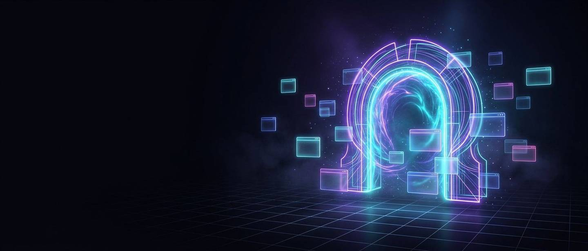

Instantâneo
Nada para instalar e nenhum patch para baixar. O jogo abre em um player em tela cheia, em segundos.
LuminSDK
Duas experiências, o mesmo endereço. Dá para trocar quando quiser.
A escolha fica só nesta sessão do navegador — a URL continua sempre a mesma.
Abra um app no dock ↓
Código aberto · criado por Ryan Smith
Uma biblioteca de jogos instantâneos: sem download, sem cadastro e sem instalação. Escolha um título, clique e jogue — direto na aba que você já está usando.
Nada para instalar e nenhum patch para baixar. O jogo abre em um player em tela cheia, em segundos.
Os jogos rodam dentro da página, com suporte a teclado, mouse, toque e tela cheia. Sem plugins.
Todo o site está no GitHub sob a licença MIT. Leia, copie, modifique e publique o seu próprio.
Sem login, sem rastreamento e sem anúncios na página. Só a sua preferência de tema fica salva no navegador.
Como funciona
Use a busca, filtre por categoria ou clique no botão de jogo aleatório quando estiver indeciso.
O player abre em tela cheia. Reinicie, alterne para tela cheia real ou feche quando quiser.
Nada é baixado no seu computador. O progresso fica no próprio jogo, no seu navegador.
O site não usa nenhum atalho de teclado enquanto um jogo está aberto: WASD, setas, espaço, Enter e todas as outras teclas vão direto para o jogo.
Biblioteca
Catálogo completo servido pelo LuminSDK, com uma interface feita para este site.
Conectando…
Escolha a cor do site
A cor fica salva no seu navegador. As partículas e o brilho do fundo acompanham a paleta.
Tente outro termo de busca ou remova o filtro de categoria.
O catálogo não respondeu. Verifique sua conexão e tente novamente.
A interface personalizada não pôde ser carregada, então estamos usando a interface original do LuminSDK. A navegação continua funcionando normalmente.
Catálogo e player servidos por LuminSDK. Cada jogo pertence aos seus respectivos autores.
Perguntas frequentes
Sim, é gratuito e não existe cadastro. Você abre a página e já pode jogar — sem login, sem e-mail e sem assinatura.
Não. Todos os jogos rodam no navegador. Esta página não baixa nenhum arquivo executável para o seu computador.
Funciona — a interface é responsiva e o player abre em tela cheia. Alguns jogos, porém, foram desenhados para teclado e mouse e ficam melhores no computador.
Não há login nem coleta de dados pessoais. Ficam no localStorage do seu navegador: tema, cor, tamanho da grade, favoritos, histórico, contagem de partidas e a cor escolhida para cada jogo. Você pode exportar ou apagar tudo em Configurações → Meus dados.
O jogo roda em um <iframe> de outro domínio, então o navegador impede o site de ler ou gravar o estado interno dele. Quem salva o progresso é o próprio jogo — muitos fazem isso automaticamente. Aqui o site guarda apenas favoritos, histórico e contagem de partidas.
Você escolhe: em Configurações dá para desligar partículas, fundo animado, cursor personalizado, animações e desfoques, ou usar o Modo leve. A detecção automática também ajusta isso conforme o dispositivo.
O código deste site é aberto e está sob a licença MIT. Os jogos vêm do LuminSDK — veja a documentação deles para os termos de uso do catálogo.
Abra uma issue no GitHub contando o que aconteceu, o navegador e o jogo em que ocorreu. Pull requests também são bem-vindos.
Open-source
Todo o site — layout, interface de jogos, temas e scripts — está publicado no GitHub sob a licença MIT. Faça um fork, mude as cores, adicione seus próprios jogos ou use como base para o seu projeto.
<div id="games"></div>
<script src="https://cdn.jsdelivr.net/gh/luminsdk/script@latest/lumin.min.js"></script>
<script>
Lumin.init({
container: '#games',
theme: 'dark'
});
</script>acervo gn-math · segunda aba
Uma biblioteca paralela com o catálogo do GN-Math: mesmos jogos, navegação própria, busca instantânea e visual diferente do LuminSDK. Tudo abre dentro do player, sem sair do site.
Estas preferências valem só para esta aba — o LuminSDK continua com as configurações dele.
O ponto e o anel seguem o mouse na cor de destaque da aba.

site dentro de site
Mais de 600 endereços organizados por coleção — jogos, pacotes de estudo e espelhos. Clicou, abriu aqui mesmo, com barra de título, tela cheia e botão de sair.
Alguns sites bloqueiam ser abertos dentro de outro site. Nesse caso o LuminSDK abre o endereço numa aba limpa (about:blank, sem referrer) automaticamente.
apoio escolar · ensino médio e fundamental
Resumos curtos, guias de redação, revisões para provas e um planejador simples — tudo aberto, sem cadastro e sem cobrança.
Escolha um assunto e comece pelo resumo de 5 minutos.
Funções, progressões, geometria plana, estatística e resolução de problemas.
Estrutura dissertativa-argumentativa, repertório e correção comentada.
Células, genética, ecologia e fisiologia humana com esquemas.
Cinemática, leis de Newton, energia e eletricidade.
Atomística, ligações, estequiometria e química orgânica.
Brasil colônia à república, guerras mundiais e contemporâneo.
Mostrando todos os recursos.
1. Introdução — contextualize o tema e feche com a tese.
2. Desenvolvimento I — argumento + repertório + explicação da relação.
3. Desenvolvimento II — segundo argumento, sem repetir o primeiro.
4. Conclusão — proposta de intervenção com agente, ação, meio e finalidade.
Raízes por Bháskara: Δ = b² − 4ac. Com Δ < 0 não há raízes reais.
Vértice: xv = −b / 2a. O sinal de a define a concavidade.
Esboço rápido: raízes no eixo x, vértice no ponto médio, ponto do termo independente.
Fotossíntese: energia luminosa → energia química, com liberação de O₂.
Respiração: quebra da glicose para produzir ATP, consumindo O₂.
As duas se completam nos ciclos de carbono e oxigênio.
1ª inércia: sem força resultante, o movimento não muda.
2ª F = m · a — força e aceleração têm a mesma direção.
3ª ação e reação: pares em corpos diferentes, mesma intensidade.
1930–1934: governo provisório e centralização do poder.
1934–1937: período constitucional, disputa entre integralistas e a ANL.
1937–1945: Estado Novo, censura (DIP) e legislação trabalhista.
Aumento de 20% = multiplicar por 1,20. Desconto de 20% = multiplicar por 0,80.
Aumentos e descontos sucessivos se multiplicam, não se somam.
Adição: ademais, outrossim, soma-se a isso.
Oposição: entretanto, todavia, em contrapartida.
Conclusão: portanto, dessa forma, em suma.
1ª lei: cada característica é determinada por um par de fatores que se separam na meiose.
2ª lei: genes independentes se combinam de forma aleatória.
Treino: cruzamento Aa × Aa → 3:1 (fenótipo) e 1:2:1 (genótipo).
Nenhum recurso encontrado. Tente “redação”, “física” ou “porcentagem”.
Suas tarefas ficam salvas neste navegador.
0 de 0 concluídas
Nenhuma tarefa por aqui ainda.
Cinco perguntas de revisão. Sem nota, sem cadastro — só para fixar.
As dúvidas que mais chegam na caixa de entrada.
Sim. O projeto é mantido por voluntários e não cobra assinatura, nem pede cadastro para ler os resumos.
Não. As tarefas ficam salvas apenas no seu navegador (armazenamento local). Se limpar os dados do site, elas somem.
Professores e estudantes voluntários. Todo material passa por uma revisão simples de clareza e de fontes antes de ser publicado.
Pode usar como apoio de estudo e citar a fonte. O material é para fins educacionais e não substitui o livro didático ou a aula.
Use o formulário de contato no rodapé. Sugestões de temas para resumos e simulados são analisadas toda semana.
Sim, o layout se adapta a telas pequenas e o plano de estudos fica sincronizado no mesmo navegador.
Cinco minutos por dia já mudam a nota da próxima prova.
Ver matérias Fazer o teste rápidoAbrindo…
A página não apareceu aqui dentro
navegador do LuminSDK
Digite um endereço ou escolha uma coleção. Se o site recusar ser embutido — ou se uma extensão/rede (Lightspeed, BlueCore, GoGuardian…) bloquear — o botão Aba limpa tenta abrir sem referrer, numa aba solta, no melhor esforço possível.
Sem promessas mágicas: bloqueio de extensão ou de rede acontece fora da página. O LuminSDK tenta o caminho limpo e avisa quando não deu — não finge que funcionou.
Nada encontrado com esse filtro.
Carregando…
Carregando jogo…